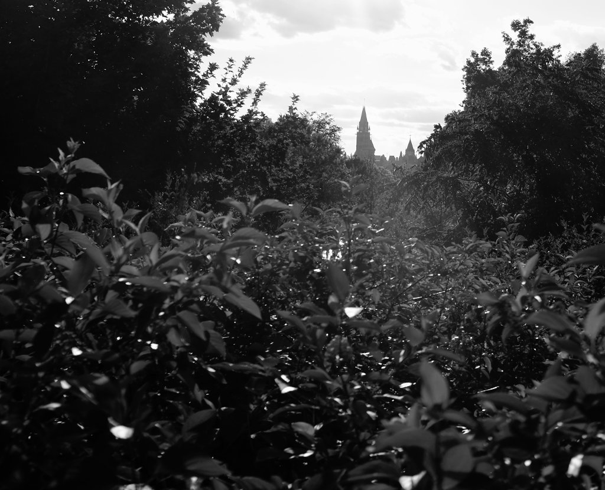

Day 68
Taken July 14th, 2014 in Ottawa, Canada
Fuji X100s 23mm 1/250 @ f/5.6 ISO 200
Taken July 14th, 2014 in Ottawa, Canada Fuji X100s 23mm 1/250 @ f/5.6 ISO 200...
Photo-a-day by Matt Thompson started May 8th, 2014.
Taken July 14th, 2014 in Ottawa, Canada
Fuji X100s 23mm 1/250 @ f/5.6 ISO 200
Taken July 13th, 2014 at Nordiq in Chelsea, Canada
Fuji X100s 23mm 1/125 @ f/2.0 ISO 3200
Taken July 13th, 2014 at Nordiq in Chelsea, Canada
Fuji X100s 23mm 1/500 @ f/2.7 ISO 250
Taken July 12, 2014 in Ottawa, Canada
Fuji X100s 23mm 1/2000 @ f/4.0 ISO 320
Taken July 11th, 2014 in Ottawa, Canada
Fuji X100s 23mm 1/160 @ f/4.0 ISO 400
Taken July 10th, 2014
Ottawa, Canada
Fuji X100s 23mm 1/250 @ f/4.0 ISO 500

Taken July 9th, 2014
Ottawa, Canada
Fuji X100s 23mm 1/125 @ f/5.6 ISO 250

Taken July 8th, 2014
Ottawa, Canada
Fuji X100s 23mm 1/50 @ f/2.7 ISO 6400
Taken July 7th, 2014
Ottawa, Canada
Fuji X100s 23mm 1/15 @ f/5.6 ISO 200

Taken July 6th, 2014
Ottawa, Canada
Fuji X100s 23mm 1/500 @ f/2.0 ISO 250

Taken July 5th, 2014
Ottawa, Canada
Fuji X100s 23mm 1/2000 @ f/4.0 ISO 200

Taken July 4th, 2014
Ottawa, Canada
Fuji X100s 23mm 1/125 @ f/8.0 ISO 1000